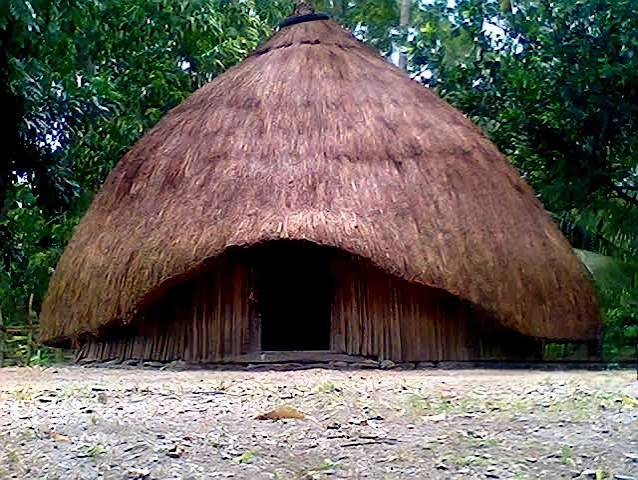
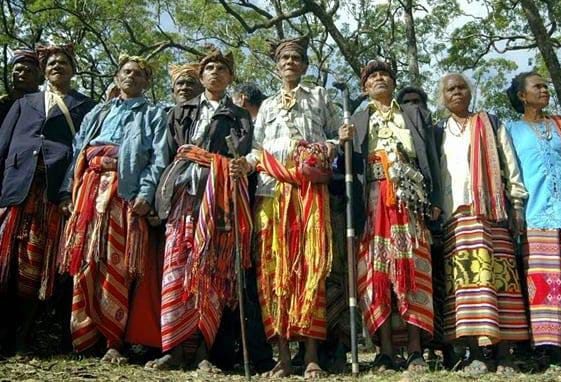
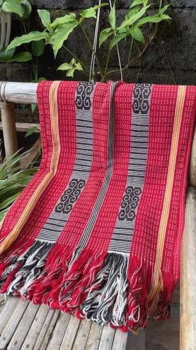

Kabupaten Timor Tengah Selatan (TTS), Nusa Tenggara Timur
Sistem Informasi Hypermedia Interaktif & Aksesibel
Menjelajahi kearifan lokal, tradisi hailaka dan warisan budaya yang masih lestari hingga kini.
Simpul 1: Profil Suku Boti
Asal-Usul dan Sejarah Keturunan Asli Suku Boti di yakini sebagai salah satu komunitas tertua dan keturunan langsung suku asli Pulau Timor. Kerajaan Terakhir: Wilayah
ini dikenal sebagai desa adat yang mempertahankan sistem pemerintahan tradisional dipimpin oleh seorang raja atau Usif.
Keterasingan Geografis: Letaknya yang berada di kawasan perbukitan terpencil (sekitar 40 km dari Kota Soe) membuat suku ini relatif terlindungi dari arus modernisasi Suku Boti adalah komunitas adat di Kecamatan
Boti, Kabupaten Timor Tengah Selatan (TTS), NTT. Terbagi menjadi Boti Luar dan Boti Dalam, Suku Boti Dalam di kenal sangat teguh mempertahankan gaya hidup tradisional,
menolak modernisasi teknologis yang merusak alam, dan di pimpin oleh seorang "Raja Boti (Usif)".
Pembagian Kelompok masyarakat masyarakat Boti terbagi menjadi dua bagian utama yang di batasi oleh aturan keyakinan dan tempat tinggal:
1.
Boti Dalam: Kelompok yang tetap teguh menjalankan tradisi leluhur dan tinggal di area khusus berpagar kayu. Jumlah warganya sekitar 300-an jiwa.
2.
Boti Luar: Kelompok warga yang telah memeluk agama formal (seperti Kristen Protestan) dan beradaptasi dengan administrasi pemerintahan moderen.
Simpul 2: Falsafah Hidup & Kepercayaan (Halaika)
Masyarakat Boti menganut kepercayaan Halaika. Mereka meyakini Uis Neno (Dewa Langit/Pencipta) dan Uis Nifno (Dewa Bumi/Pemelihara). Kehidupan sosial disandarkan pada prinsip gotong royong, kedamaian, dan tidak menghukum pencuri melainkan memberi mereka modal agar tidak mencuri lagi. Falsafah hidup Suku Boti berakar pada prinsip keseimbangan, kesederhanaan, dan penghormatan penuh terhadap alam.
Hubungan ini tercermin dalam cara mereka memandang kehidupan melalui keyakinan Halaika.
1.
Dua Penguasa Dunia: Mereka percaya pada dua penguasa, yaitu Uis Neno (Tuhan Langit) yang menjaga kehidupan rohani/spiritual, dan Uis Afu (Tuhan Bumi) yang menyediakan makanan, air, dan kesuburan untuk kehidupan jasmani.
2.
Alam Sebagai Ibu: Bagi masyarakat Boti, bumi adalah ibu yang menyusui dan memberi makan manusia. Oleh karena itu, merusak alam
(seperti menebang pohon sembarangan atau mengeksploitasi tanah) dianggap sebagai dosa besar dan pelanggaran adat.
Simpul 3: Galeri Kebudayaan & Motif Tenun

Rumah Adat (Lopo & Ume Kebubu)
Lopo berfungsi sebagai tempat musyawarah dan menerima tamu. Ume Kebubu adalah
rumah bulat beratap alang-alang tempat memasak dan menyimpan hasil panen. Sedangkan untuk laki-laki disebut Beti Ma'u. Dibutuhkan waktu
2 sampai 4 pekan untuk menghasilkan satu pakaian adat ukuran dewasa.

Pakaian Adat Tradisional
Pakaian adat untuk wanita dari Suku Boti (suku tradisional di Timor Tengah Selatan, NTT) disebut dengan nama Tais,
Sedangkan untuk laki-laki disebut Beti Ma'u.
Saat acara-acara khusus, Pakaian adat biasanya dilengkapi dengan aksesoris seperti aol noni
(tempat sirih pinang yang terbuat dari muti), suni (pedang yang digunakan oleh laki-laki), pilut (ikat kepala bagi laki-laki sebagai
tanda kehormatan), dan kil' noni (sisir kepala yang terbuat dari perak dan digunakan oleh perempuan).

Kain Tenunan & Motif Khas
Tenun ikat dibuat dari benang kapas buatan sendiri dan pewarna alami (akar/daun). Dibutuhkan waktu 2 sampai 4 pekan
untuk menghasilkan satu pakaian adat ukuran dewasa. Motif melambangkan flora, fauna, dan keseimbangan alam Timor. Ini sudah termasuk
mengolah kapas menjadi benang, pewarnaan benang, mengikat benang menjadi motif, menenun, dan menjahit.
Tarian Tradisional
Tari Swo Ma Eka(Perang):Merupakan tarian kemenangan perang atau tarian penyambutan tamu agung. Tarian ini ditarikan oleh pria dan wanita dengan gerakan dinamis sebagai bentuk penghormatan mendalam dan penyemangat bagi para pemuda. Pertunjukan tarian adat khas Suku Boti dengan balutan busana tenun ikat tradisional di halaman rumah adat Ume Kebubu
Makanan Khas
Makanan pokok dan khas Suku Boti di Pulau Timor, Nusa Tenggara Timur, bersumber dari hasil ladang tradisional mereka
seperti umbi-umbian dan jagung. Berikut adalah beberapa makanan tradisional Suku Boti:
1.
Laok Hau: Ubi kayu atau singkong yang direbus maupun dibakar.
2.
Laok Loll: Ubi jalar rebus yang sering dikonsumsi sehari-hari.
3.
Jagung Bose: Olahan jagung pipil yang dimasak lunak bersama kacang-kacangan lokal seperti kacang arbilah.
4.
Jagung Katemak: Masakan kuah yang memadukan jagung, kacang-kacangan, dan labu atau sayuran lokal.
5.
Kue Jagung: Masakan kuah yang memadukan jagung, kacang-kacangan, dan labu atau sayuran lokal.
6.
Laok Loll: Ubi jalar rebus yang sering dikonsumsi sehari-hari.
Bahasa Daerah (Uab Meto)
Masyarakat Suku Boti menggunakan bahasa ibu Uab Meto (Dawan) Dalam kehidupan sehari-hari
baik dalam kegiatan adat, ritual keagamaan, dan percakapan sehari-hari. Dua Penguasa Dunia Mereka percaya pada dua penguasa, yaitu Uis Neno (Tuhan Langit) yang menjaga kehidupan rohani/spiritual, dan Uis Afu (Tuhan Bumi) yang menyediakan makanan, air, dan kesuburan untuk kehidupan jasmani.
Alam Sebagai Ibu Bagi masyarakat Boti, bumi adalah ibu yang menyusui dan memberi makan manusia. Oleh karena itu, merusak alam (seperti menebang pohon sembarangan atau mengeksploitasi tanah) dianggap sebagai dosa besar dan pelanggaran adat.Sementara itu, masyarakat Boti Luar menggunakan bahasa Indonesia, terutama saat berhubungan dengan masyarakat dari luar desa. Meski begitu, masyarakat Boti Luar juga menggunakan bahasa Dawan dalam percakapan sehari-hari dengan masyarakat kampung.
Simpul 4: Bahasa Lokal & Aksesibilitas AI
Masyarakat Boti berkomunikasi dalam bahasa ibu Uab Meto (Dawan).
Integrasi AI Aksesibilitas (Text-To-Speech & NMT)
Uji coba sintesis suara AI untuk membaca teks adat Boti dalam Bahasa Indonesia & terjemahan lisan Uab Meto:
"Berikut adalah beberapa kosakata dasar dalam Bahasa Dawan (Uab Meto) yang sering digunakan dalam percakapan sehari-hari di wilayah Timor Tengah Selatan: Angka: Satu:Mese, Dua:Nua, Tiga:Tenu, Empat:Ha, Lima:Nima
Kata Ganti & Sapaan Saya: Au:Kamu, Ho:Dia, In:Kita/Kami, Hit/Kaim, Bapak:Amaf, Ibu:Enaaf, Au ngak:Nama saya adalah."
Simpul 5: Peta Interaktif Boti, TTS
Lokasi Geografis Suku (Desa) Boti terletak di Kecamatan Ki'e, Kabupaten Timor Tengah Selatan (TTS), Provinsi Nusa Tenggara Timur (NTT).
Peta Situs (Sitemap)
Gunakan sitemap ini untuk berpindah simpul secara langsung tanpa disorientasi: